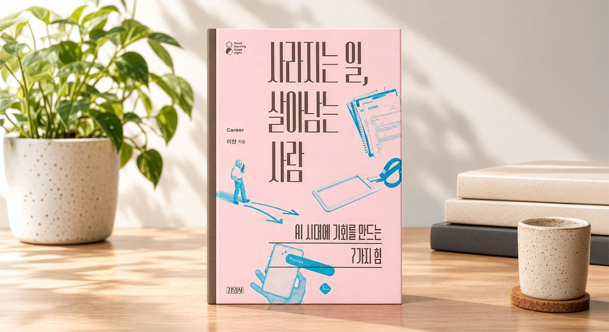

012026학년도 3·1장학생 선발 및 장학금 지급
장학생 선발
박사과정 장학생
최종 37명 선발
장학금 지원
2026년 2학기 장학금 지원
1억 4,800만 원
1년간 총 3억 원 규모
누적 대학원
장학 수혜
1961~2025년
총 3,579명 수혜
약 52억 원 장학금 지급
2026학년도 3·1장학생 모집(7월 6일~7월 26일) 결과, 엄정한 심사를 거쳐 총 37명의 박사과정 학생이 최종 선발되었습니다. 3·1문화재단은 다양한 분야에서 학문과 연구에 매진하는 인재들이 안정적으로 활동을 이어갈 수 있도록 지속적으로 지원하고 있습니다. 이번에 선발된 장학생들에게는 2026년 2학기 장학금 1억 4,800만 원을 시작으로, 1년간 총 3억 원 규모의 장학금이 지급될 예정입니다. 이번 장학금이 장학생들의 학문적 성취를 뒷받침하는 든든한 기반이 되기를 기대합니다.
02제68회 3·1문화상 후보자 추천 접수 마감 및
심사위원회 착수
공정한 심사를 위한 기준
- 위원 정원 2/3 이상 출석 시 회의 성립
- 후보자 선정은 출석위원 2/3 이상 찬성
- 모든 의결은 무기명 투표
- 심사위원은 이해관계가 있는 후보의 심사를 기피할 수 있음
- 01 후보자 모집
- 02 심사위원회 구성
- 03 분과위원장 회의
- 04 (분과별) 심사
- 05 (수상 대상자) 검증
- 06 (수상자) 인준
- 07 (수상자) 발표
- 08 시상식
지난 7월 1일부터 진행된 ‘제68회 3·1문화상’ 후보자 추천 접수가 9월 10일 마감되었습니다. 현재 학술(인문사회과학), 학술(자연과학), 예술, 기술·공학 등 각 분야의 전문가로 심사위원회 구성을 마쳤으며, 분과위원장 회의와 분야별 심사, 검증 등의 절차를 거쳐 수상자를 선정할 예정입니다. 3·1문화재단은 공정하고 신중한 심사를 바탕으로 심사 전 과정을 충실히 이어가겠습니다.
03굿굿시리즈 신간 출간 및 출간 예정 소식

재단의 교양 단행본 시리즈 ‘굿굿시리즈’의 24번째 도서 《나의 이기심이 세상을 구한다면》(손봉호 저)이 지난 6월 출간되었습니다. 우리 사회의 윤리적 성찰과 이타성에 대한 깊이 있는 통찰을 담은 책으로, 독자 여러분의 많은 관심 바랍니다. 이어 9월에는 미래 전망을 주제로 한 25번째 도서 《사라지는 일, 살아남는 사람》(이찬 저)을 선보였습니다. 굿굿시리즈가 전하는 새로운 이야기에도 많은 관심과 기대 바랍니다.
04천안아산 다문화엄마학교 8차년도 성료 및
9차년도(17기) 개강
재단이 후원하는 천안아산 다문화엄마학교가 8차년도 교육 사업을 성공적으로 마무리했습니다. 8차년도 과정에서는 15기 11명(12명 입학), 16기 13명(14명 입학) 등 총 24명의 다문화 가정 어머니가 전 과정을 이수하며 뜻깊은 졸업의 결실을 맺었습니다. 이어 2026학년도 하반기에는 17기 신입생 10명이 새롭게 입학해 9차년도 교육을 시작했으며, 자녀 교육과 사회 적응을 위한 다양한 배움을 이어가고 있습니다.